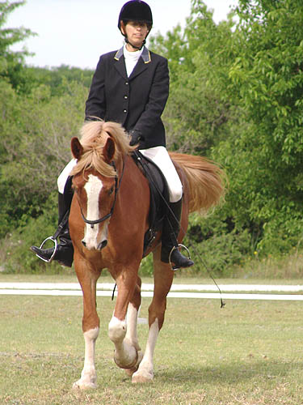

Wiley's First Dressage
Show We did Intro Test A and
B. We were both a little nervous
right off the trailer, but
with a boost of confidence and a boost
into the saddle from my
parents, we saw a lot of improvement.
I hadn't given us enough
time to relax before our first class (we
were supposed to be the
first test of the day). Wiley was looking
around and I was just worried
about getting him to go in the ring.
He went in fine but we had
a very tense test. No chance of leaving
the ring or not getting
our transitions, but a short trot and his head was
going everywhere looking
at everything. We also never hugged the rail near
the judges. He really didn't
trust them.
With an hour break I sat
and relaxed and my father walked Wiley around and
let him graze. After the
first test he seemed to calm down quickly.
By the time I got on for
the second test he felt like he did at home.
So, we had a lovely, steady
test. No real stretch at the walk (we don't have
that at home either), but
he was listening and calm.
Our first score was a 55
and our second a 58.5. Tons of improvement
and a 4th and 3rd place
ribbon. I bet next time he'll be ready to be a real
dressage horse.
Our second warm up was
much improved. I took off the flash and he was steadier in the bridle.
Wiley didn't like the
judge's stand (golf cart). We went around it a few times, but it wasn't
until the second test that he finally ignored it.
So pleased with this
entry. He was forward and fairly relaxed. I have a hard time judging if
his nose is too far in, but I think I'm starting to get a feel for it.
Saluting the judge.
His halts tend to be very nice. He stops on a dime and likes to halt balanced.

He doesn't have as much
bend as I'd like, but he's just starting to listen to leg for lateral work.
He was relaxed, so I
didn't push for as forward of a trot as I know he can do. After our first
test, I was happy with calm and steady.
This I could feel, so
I'd loosen the reins and put on more leg. I don't always get the correct
response, but even during the test I have to try.
Wrong bend. He's ignoring
the inside leg and looking at the judge. It's nice that he didn't spook
or act silly, just did a little avoiding.
Without the flash, we
had a lot less grinding and head tossing.
Not what I wanted for
the stretch down, but he hasn't figured it out at home yet. He's dropping
his poll and nose, but he's actually using more topline muscle to do this
than what I'd like him to do.
Well at least he's relaxed
and stretching his neck forward. We've got time to work on the down and
out part.
I like that he's got
a nice neck. It's nice to ride a horse with a neck in front of you.
Not how I want him to
go. Luckily he doesn't do this often. It's nice to have the neck in front
of you, but here he's not using his back and is hollow (to my way of thinking).
This is much more what
I like. Relaxed and reaching into the bridle. And, what's nice is that
he doesn't have an ear cocked on the judge.
We still had some mouthing
of the bit, but I think he was happy to have the flash off.
And another balanced
halt. Unfortunately he didn't like how I asked for the halt, and threw
his head right before the picture. Still, a pretty halt.
Wiley did not want to
stand and pose for the camera. He was ready to go off investigating the
show grounds.